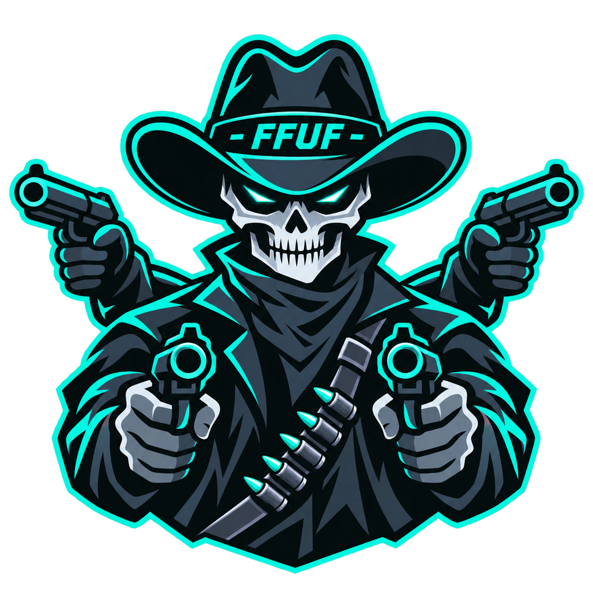

Practical security tools, generators, and technical writeups.

Build commands for HTTP fuzzing with wordlists, filters and request options.
Discover subdomains using CRT, DNS, and VHost enumeration.